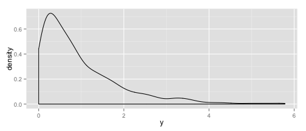

Abhijit Dasgupta
ARAASTAT
airquality, create a data.frame giving the
average, minimum and maximum monthly temperature and ozone levelFor details about the dataset, try ?airquality.
For hints, press p
The R function lm stands for linear model and does linear regression.
Recall that we can write regressions like formulas:
lm(y ~ x1 + x2 + x3, data=dat)
model1).summary(model1) to see the results. Store this in an objectnames to see components of the objectHints on pressing p
You can write functions in R to encapsulate repeatable tasks. The general format for functions is
functionName <- function(arg1, arg2,){
# Code to be evaluated
}
1-alpha, you can get the appropriate standard normal quantile using qnorm(1-alpha)Hints on pressing p.
Generalized linear models are extensions of linear models, that are based on the exponential family of distributions. They are characterized by three components:
This framework includes several classical models:
R provides a function glm which performs generalized linear regression.
## function (formula, family = gaussian, data, weights, subset,
## na.action, start = NULL, etastart, mustart, offset, control = list(...),
## model = TRUE, method = "glm.fit", x = FALSE, y = TRUE, contrasts = NULL,
## ...)
## NULL
The arguments you will need often are formula, family, data, subset and na.action. The rest give finer control over the fitting algorithm.
Details of the different arguments, as well as different components of the model object that is created, can be found by help(glm).
The family argument takes either a family function or the name of the family function (which uses the default link). The following families and default links are included. Note that these families reflect the distribution of the dependent variable
| Distribution | Family function |
|---|---|
| Binomial | binomial(link='logit') |
| Normal | gaussian(link='logit') |
| Gamma | Gamma(link='inverse') |
| Inverse Gaussian | inverse.gaussian(link="1/mu^2") |
| Poisson | poisson(link='log') |
For other available links, see help(family)
A logistic regression can be run using the following code:
model1 <- glm(case ~ spontaneous + induced, data = infert, family = binomial)
summary(model1)$coef
## Estimate Std. Error z value Pr(>|z|)
## (Intercept) -1.7079 0.2677 -6.380 1.776e-10
## spontaneous 1.1972 0.2116 5.657 1.543e-08
## induced 0.4181 0.2056 2.033 4.201e-02
Here case is a numeric object taking values 0 and 1. You can also use a factor
object with only two levels, such as "yes" and "no". R will convert this to a 0-1 variable
for fitting.
You can also do logistic regression if you have numbers of "yes"'s and "no"'s, or number of cases and controls. In this situation, the response is a 2-column matrix of the number of cases and number of controls
data(esoph)
model2 <- glm(cbind(ncases, ncontrols) ~ agegp + tobgp * alcgp, data = esoph,
family = binomial)
Note, in the code, tobgp*alcgp is shorthand for the main effects and the 2-way interaction between
the variables. You could also write it separately as tobgp + alcgp + tobgp:alcgp
Linear models and GLMs share the same set of diagnostic plots. I demonstrate using a linear model.
data(mtcars)
model3 <- lm(mpg ~ wt + as.factor(cyl), data = mtcars)
par(ask = T) # This will ask you before changing the plot in the window
plot(model3)
I will go into some detail about how to fit GLMs, run several examples with you, and show how to easily extract the results to paste into your Word document or Powerpoint presentation
Two packages I will heavily use for reporting are
knitrandpander. Please make sure they are installed on your computer. These will make life much easier. Also, please install Pandoc from here
The main packages I will use here are
caret,AppliedPredictiveModeling,randomForest,ipred,elasticnet,gbm. Please have them installed on your machine.
The basic idea is to train the model on one data set and then test its performance on another. If you test it on the same data set you trained on, the performance will be over-optimistic and you will almost certainly be overfitting. We will talk about single training-test split, as well as k-fold crossvalidation. This step is the crux of getting good predictive models tuned.
Our workhorses will be AppliedPredictiveModeling::createDataPartition and caret::createFolds (the nomenclature here is package::function)
For continuous outcomes, we will often use RMSE (root mean square error).
For categorical outcomes, the confusion matrix is often used. I will also talk about ROC curves, calibration, equivocal predictions and Brier scores as a preferred metric for performance evaluation.
We will survey a few types of models:
A cursory (Wikipedia) look at these methods would be good before Friday
help(Distributions)help(RNG) for other options.r{distribution}, so
rnorm (Normal)rbinom (Binomial)rexp (Exponential)rpois (Poisson)rf (F)rgamma (Gamma)library(ggplot2)
x <- rnorm(1000)
qplot(x)
library(ggplot2)
y <- rexp(1000)
qplot(y, geom = "density")

R does not have dedicated packages for DES, but all the components you need can be done in R. This makes sense, since all simulation schema are different, and it is a matter of mixing and matching the components. Following Nance (1993) and (1995), a DES programming language must have the following:
R satisfies these. I will work through a simple example of a M/M/1 queue to show how a DES can be programmed in R.
There is one, rather simplistic, general microsimulation package in R, simario. There is also a package, sms for spatial microsimulation, available on CRAN.
A nice presentation on microsimulation in R is available here